Basic Electronics Components
Resistor: It can limit the current flow, prevent other components from being short-circuited or demaged. Adjust singnal level is also its thing. For example, when we use LED, we will always use a resistor to reduce the current to avoid damaging the LED. Also, pull-up/ pull down resistor can bring lot of useful and fun effect.
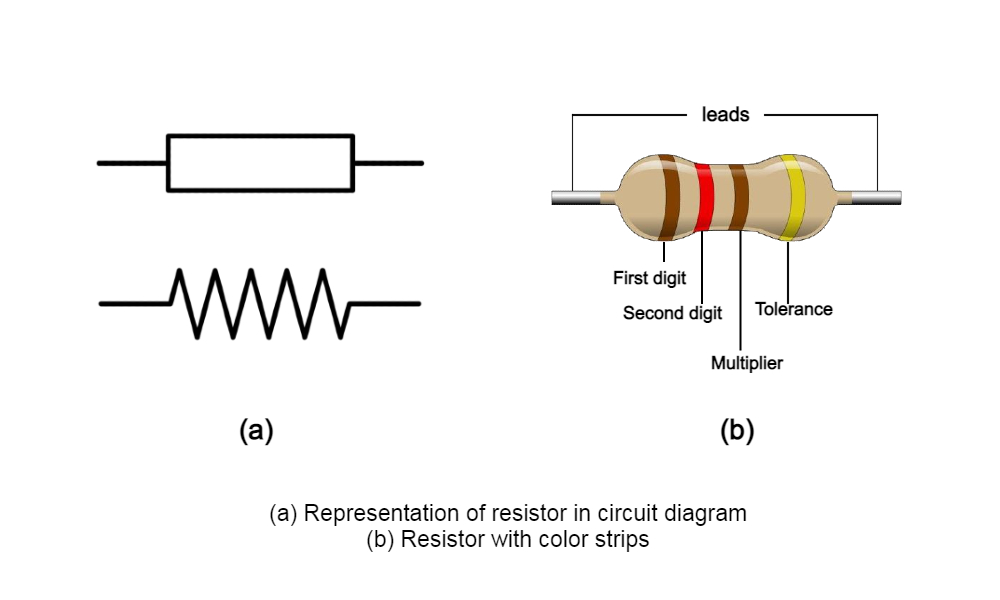
Capacitor: It can store and release electronic energy. We can use it to smooth out the power fluctuation and remove noise, so that the circuit can have a more stable voltage supply.
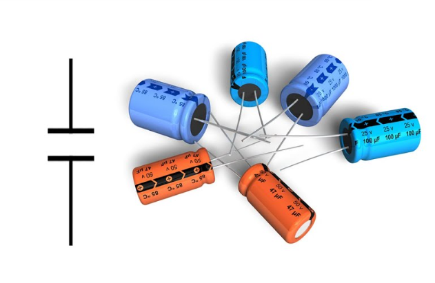
LED: It can emit light when current flows through it, also called light emitting diode, looks like a light bult
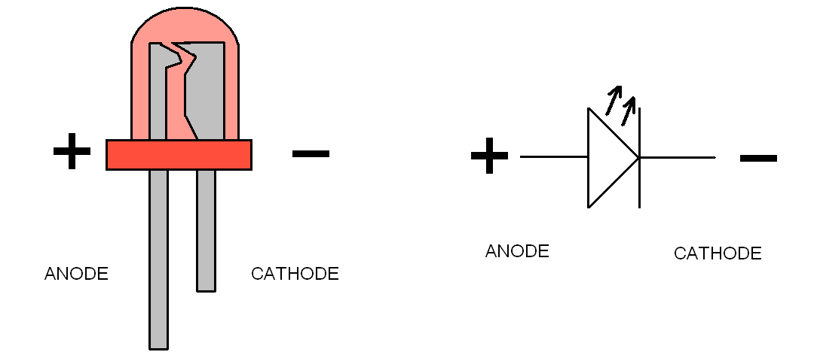
Button: It can turn off/on a circuit like a switch/trigger.
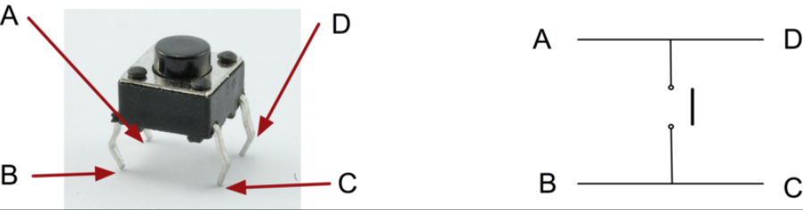
Transistor: It can be used as switch or amplifier, it has 3 pins include base, collector, and emitter. NPN transistor can connect the transistor(connect pin collector and pin emitter) if the current in pin base is heigher than the current in pin emittor, PNP needs lower.
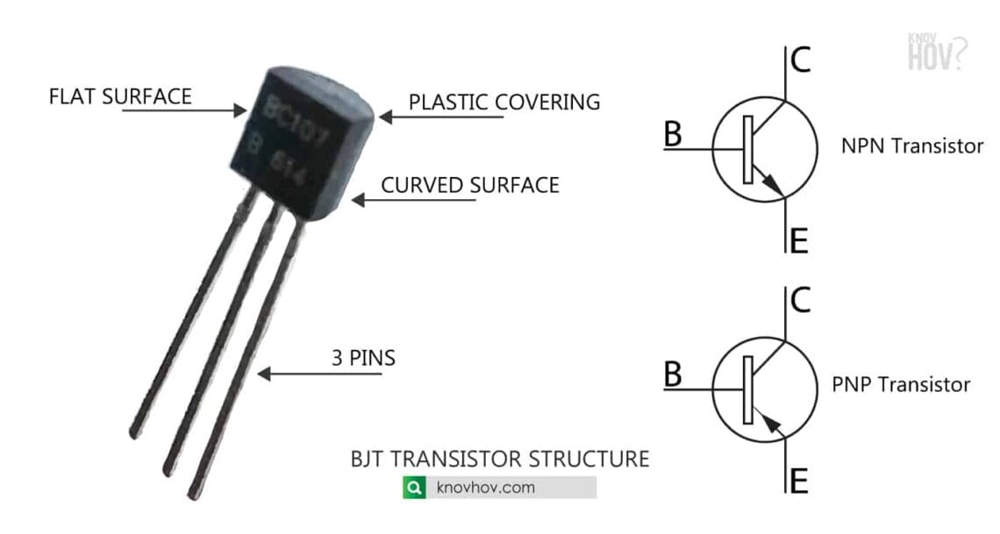
Sensors: Different types of device that can detect physical properties and convert it to electronical signals.
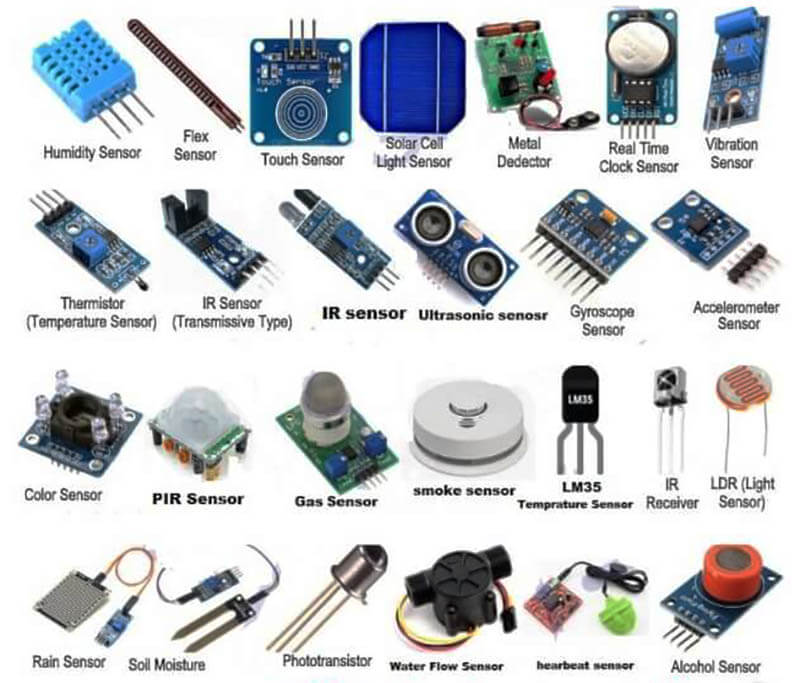
Actuators: opposite to sensors, actuators can convert digital signals into physical properties like vibration and sound. For example, motors and solenoids are both actuators.
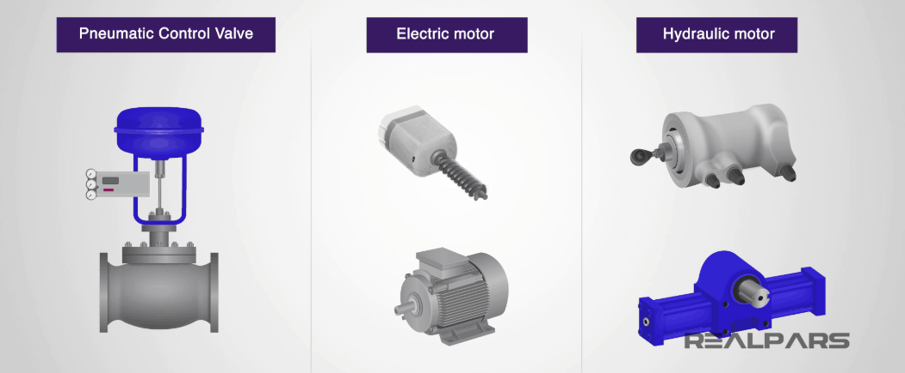
KiCad
I download KiCad from here
Then, I download fab library from here, as the description said, I run KiCad, go to "Preferences / Configure" Paths and add new environment variable "FAB", that points to location of the fab library on my drive F:\kicad\lib\fab, which is needed for the 3D models to load correctly, go to "Preferences / Manage Symbol Libraries" and add fab.kicad_sym as symbol library, and go to "Preferences / Manage Footprint Libraries" and add fab.pretty as footprint library.
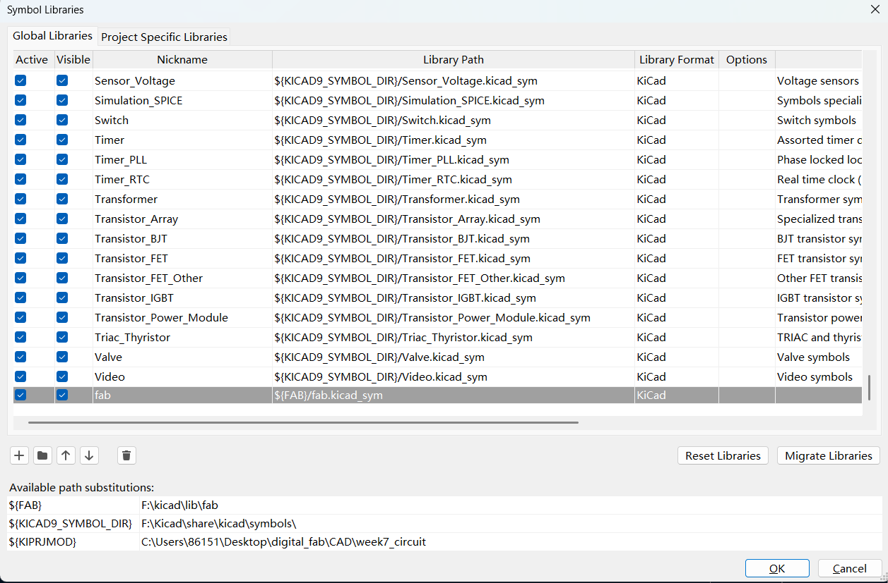
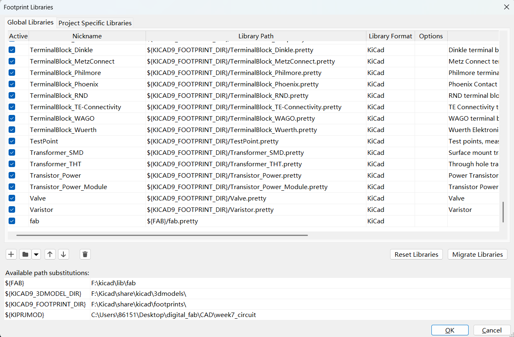
Then I click the footprint editor and add the XIAO Generic SocketSMD as the new footprint, then I use the 3D viewer(in View of top manu) of footprint editor to see its 3D model.
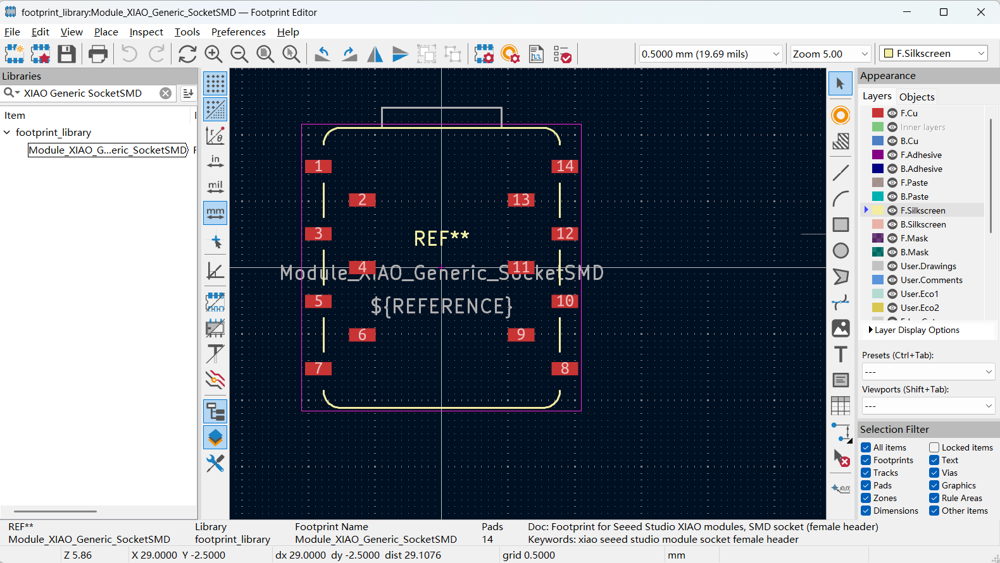
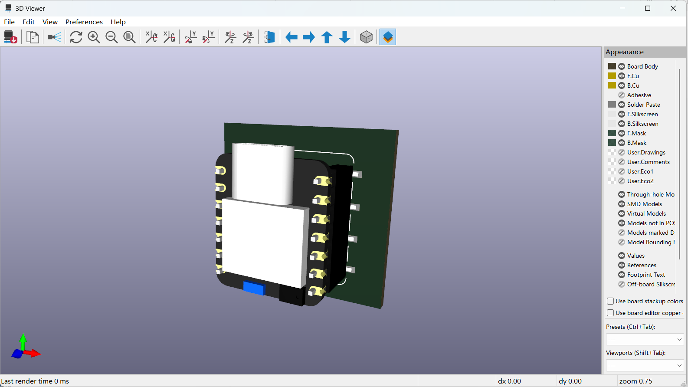
Circuit
Then I click KiCad Schematic Editor to design a circuit, I add an external LED with current limiting resistor(make sure the resistor is between LED and VCC), and a button featuring a pull-up resistor from place symbols(maker sure the resistor is between VCC and the button)(choose the components that have footprints). After that, I connect them with routing tool and add corresponding labals to them, then I connect the button part to connect with the input pin D0 of XIAO Generic SocketSMD, add place no connect flags on unused pins.
To show another way, I copy the button part and add the same power GND and VCC, use the button label to symblize it(use draw text boxes to write the prompt), and then add the same button label to the input pin D10 meaning the whole button part connect to it.
As required, I add PinSocket_01x04_P2.54mm_Horizontal_SMD as I2C(and changed its name to I2C), then connet these 4 pin with SDA, SCL, VCC, GND
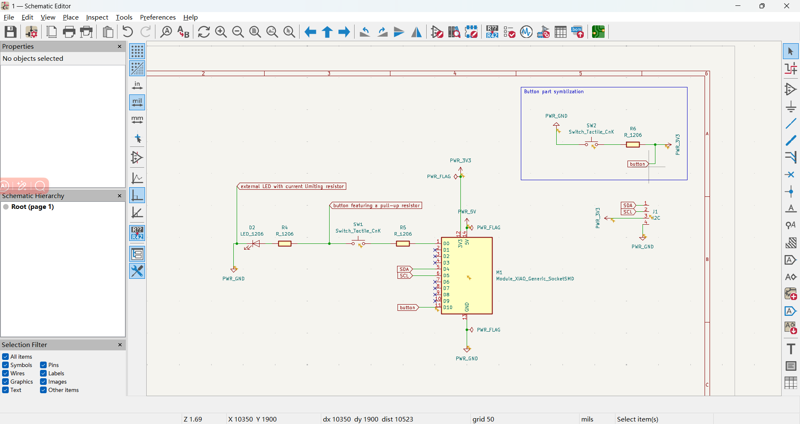
Finally, it will be no error in it.
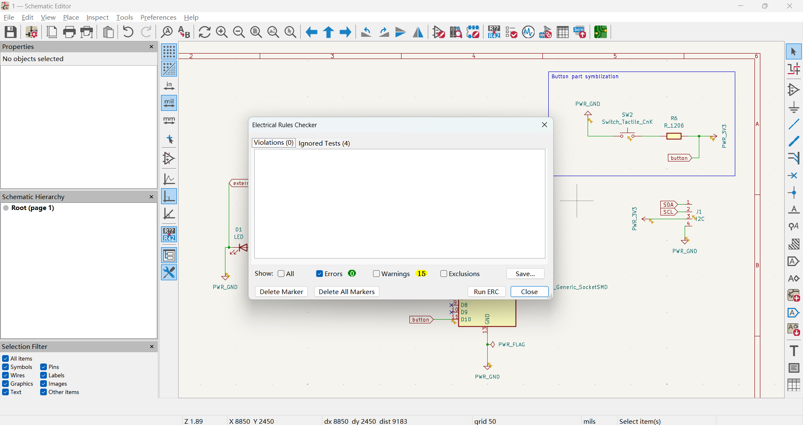
Layout
I open pcb file and click the add PCB from schematic and upload the content of schematic editor into PCB successfully.
Then I change the place of the components to organize the blue light line. I use Edge.Cuts and Draw Rectangles to limit the edge of my device, mouse right to click the rectange I draw and choose the shape modification can change the corner of the rectangle(like round..), use Draw Orthogonal Dimensions to lable the length of the board.
Use pre-defined sizes to define size, change the parameters of different width of the track.
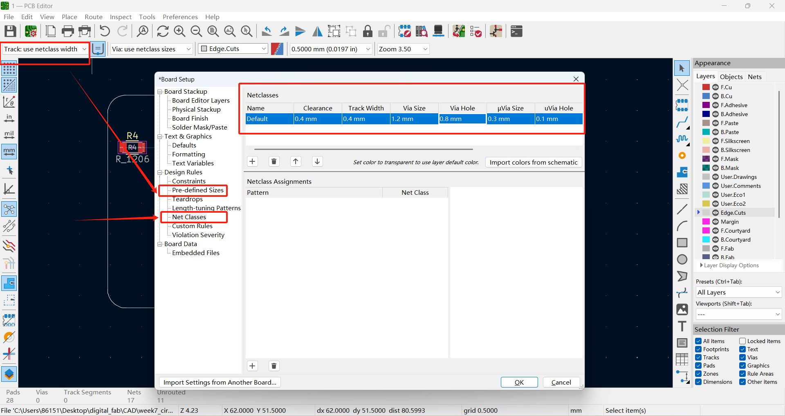
Use Route single tracks to draw the connect lines between different components, if I choose one pin and press F, then It will draw the connect line between 2 pins automatically.
Draw Filled Zones and Edit>fill all zones can make the circuit more clear.
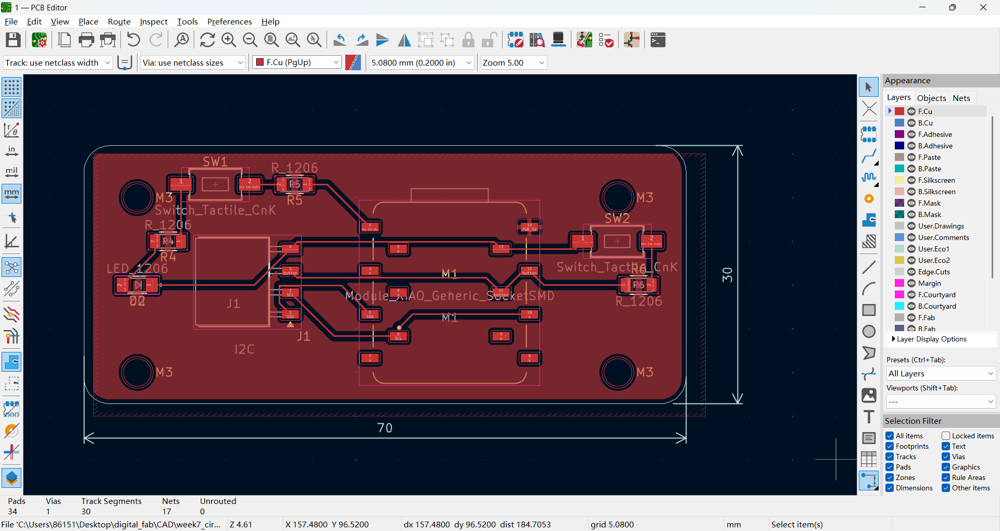
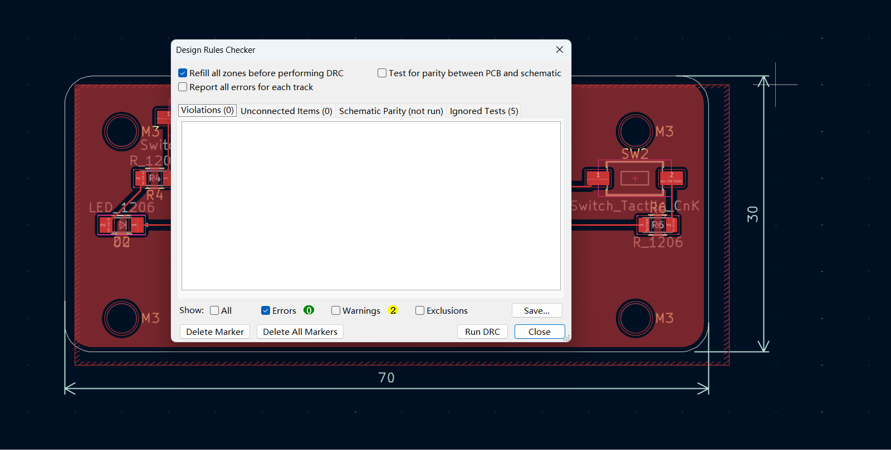
Here is the Kicad file that I'm working with.